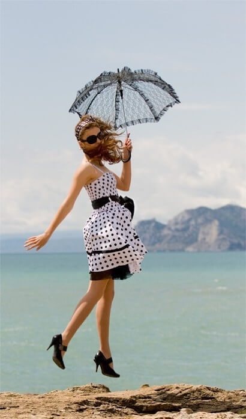
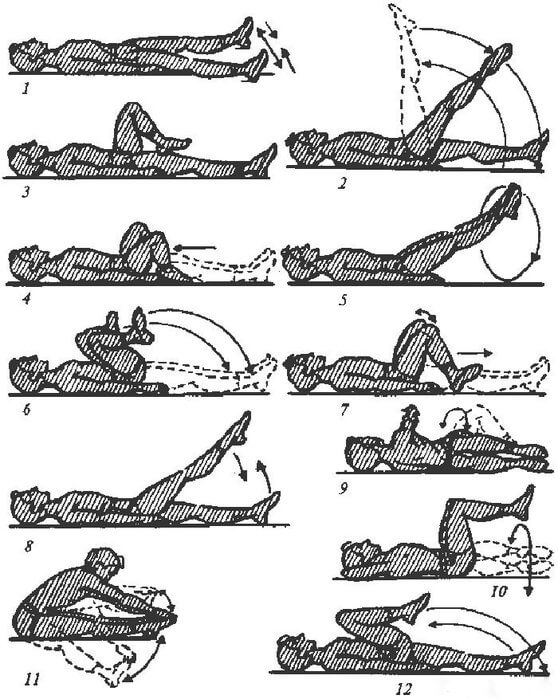
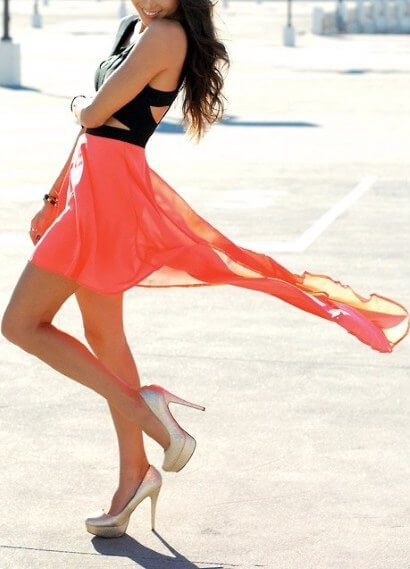

मीरा:
मेरे सुंदर पैर! मैंने पैरों की थकान और सूजन से राहत पाई
हैलो दोस्तों, मैं मीरा, एक बार फिर! मैं आपसे एक बढ़िया न्यूज़ शेयर करना चाहती हूँ... मुझे आखिरकार अपने पैरों में सूजन और दर्द से राहत पाने का तरीका मिल ही गया!
आपको याद है एक साल पहले मैंने अपनी पोस्ट्स में अपने पैरों में पूरे टाइम दर्द, भारीपन और सूजन के बारे में लिखा था।
एक साल पहले मुझे बड़ी सीरियस प्रॉब्लम हो गई थी: हर शाम पैरों में बेहद थकान महसूस होती थी: पूरे टाइम दर्द रहता था, भारीपन लगता था और रात में पैरों में क्रैम्प आते थे! अपने फेव्रेट हाई-हील की तो मैं सोच भी नहीं सकती थी। मैं सिर्फ स्पोर्ट-शू पहन पाती थी। सबसे खराब तो वेरिकोज़ नसें दिखती थीं। और ऐसा इसलिए था क्योंकि मुझे अपने काम पर दिन भर खड़े रहना पड़ता था। लेकिन मुझे अपनी जॉब बहुत पसंद थी और हाई-हील जूते और सैंडल पहनने का भी मुझे बहुत शौक था... तो क्या मैंने अपने पैरों की सेहत की खातिर नौकरी छोड़ दी? नहीं मैंने इस प्रॉब्लम के दूसरे हल ढूँढने की कोशिश की और मैंने ढूंढ ही निकाला! नीचे मैं अपने वो सीक्रेट बता रही हूँ जिनसे मैं अपने पैरों को सुन्दर और आराम में रखती हूँ:
1. कांट्रास्ट शावर
हर सुबह और शाम मैं अपने पैरों को कांट्रास्ट शावर देती हूँ। मैं अपने पैरों को दस मिनट तक शावर में रखती हूँ और उनके ऊपर बदल-बदल कर गुनगुना (गुनगुना, गरम नहीं!) और ठंडा पानी डालती हूँ।
2. सेल्फ-मसाज
शावर लेने के बाद मैं प्यार से पैरों की मसाज करती हूँ: मैं एढ़ियों से शुरू करके मीडियम प्रेशर से ऊपर की तरफ मसाज करती हूँ। हर पैर के लिए 15-20 स्ट्रोक्स तो काफी होते हैं।
3. पैरों की एक्सर्साइज़
आपको इंटरनेट पर कई तरह की एक्सर्साइज़ मिल जाएंगी। मुझे खुद "साइकल" (इसमें आप अपनी कमर के बल लेट कर काल्पनिक पैडल मारती हैं) और "कैंची" (साइकल जैसी ही पोसिशन बस आपके पैर क्रिस-क्रॉस चलते हैं)। बहुत पसंद है। ये रही कुछ उपयोगी एक्सर्साइज़:
4. मैं ट्रोक्सेर्यूटिन वाली लेग-जेल लगाती हूँ
पैरों के स्वास्थ्य के लिए एक बढ़िया स्किनकेयर प्रोडक्ट बहुत जरूरी होता है। कई तरह की क्रीम लगाकर ट्राय करने के बाद मैं यही कहूँगी कि मेरी फेव्रेट क्रीम है। इसे लगाते हुए अब मुझे काफी समय हो चुका है। इस क्रीम में शक्तिशाली वेनोटॉनिक, एंटी-एंटीओडिमाटस और वैसोप्रोटेक्टिव प्रभाव हैं। इस क्रीम में मिले सहयोगी पदार्थ खून का प्रवाह बढ़ाने में मदद करती है, ""वेरिकोज़ नसों"" से राहत देते हैं और दाह कम करते हैं जिससे त्वचा को आराम मिलता है। आप कोई भी जेल या क्रीम लगा सकती हैं लेकिन यह बेहद जरूरी होता है कि क्रीम आसानी से लग जाए, इसे त्वचा तुरंत सोख ले और इससे आपके कपड़ों पर चिपचिपे दाग न लगें। मेरे विचार से तो इन सब गुणों में खरी उतरती है।"
और हाँ, मैं बताना भूल ही गई थी, मैंने हाल ही में गरम पानी से नहाने के बजाय कांट्रास्ट शावर लेना शुरू कर दिया है, और मैं हफ्ते में एक बार स्विमिंग पूल जाती हूँ। यदि आप अपनी नसों को स्वस्थ रखना चाहती हैं तो इससे बहुत फायदा होता है।
ऊपर मैंने कुछ ऐसी आसान टिप्स बताई हैं जिनसे आप अपने पैरों की सुंदरता और स्वास्थ्य वापस पा सकती हैं। अब मैं फिर से अपनी शॉर्ट ड्रेस और हाई-हील पहन पाती हूँ। मेरे पैरों में थकान और भारीपन नहीं रहते। इसके उलट, मेरे पैर अब पूरे दिन पंख जैसे हल्के महसूस होते हैं। मैं उम्मीद करती हूँ मेरे अनुभव से आपको भी मदद मिलेगी :-) मैं सभी के लिए सुंदर और स्वस्थ पैरों की कामना करती हूँ! फिर मिलते हैं! :-)